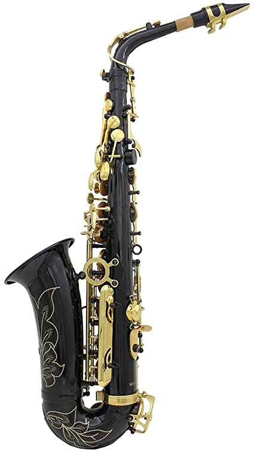

Puede que la música entre por los oídos, pero va al corazón...
Cuando nos dicen vientos a la hora de hablar de música, tenemos presentes varios instrumentos que son pioneros a
la hora de hacer música, intrumentos tales como: Saxofones, trompetas, trombones, clarinetes

El saxofón, también conocido como saxófono o simplemente saxo, es un instrumento musical cónico, de la familia de los instrumentos de viento-madera, generalmente hecho de latón, que consta de una boquilla con una caña simple al igual que el clarinete. Fue inventado por Adolphe Sax a principios de los años 1840.
La trompeta es un instrumento musical de viento, que pertenece a la familia de los instrumentos de viento metal o metales, fabricado en aleación de metal. El sonido se produce gracias a la vibración de los labios del intérprete en la parte denominada boquilla a partir de la columna del aire.
El clarinete es un instrumento musical de la familia de los instrumentos de viento-madera que consta de una boquilla con caña simple. Dentro de la orquesta, se encuentra en la sección del viento-madera, junto a la flauta, el oboe, el saxofón y el fagot.